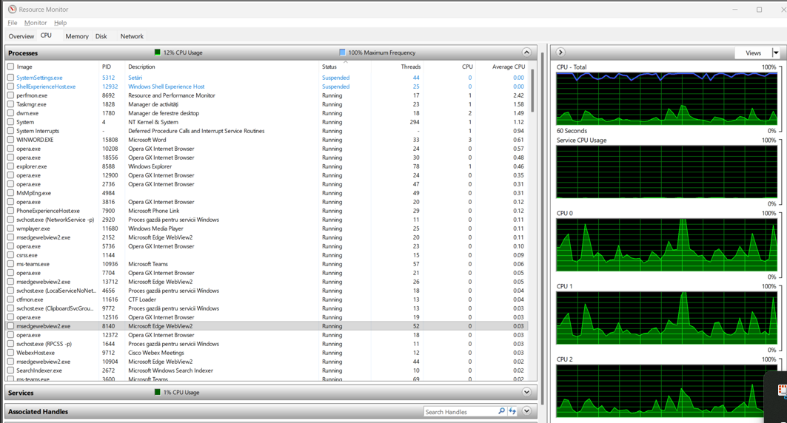

Email: sabiuta.fl.diana@student.utcluj.ro
| Componentă | Caracteristici | Rol |
|---|---|---|
| Procesor (CPU) | Intel Core i7-1065G7, 4 nuclee, 8 thread-uri | Executarea instrucțiunilor și procesarea datelor |
| Memorie RAM | 16 GB DDR4 | Asigură rularea simultană a mai multor aplicații |
| Stocare | SSD | Stocarea rapidă a datelor și a sistemului de operare |
| Placă video | Intel UHD Graphics | Redarea conținutului video și grafic |
| Sistem de operare | Microsoft Windows 11 Pro, 64-bit | Gestionarea resurselor hardware și software |
| Componentă | Descriere |
|---|---|
| CPU | Intel Core i7-1065G7 |
| RAM | 16 GB |
| Disk | SSD |
Dublu click pentru slideshow